WWDC 2022: Swift generics and protocols
Find hereafter a detailed summary of two videos that belong to a taxonomy of some WWDC footages.
The original videos are available on the official Apple website (session 110352, session 110353).
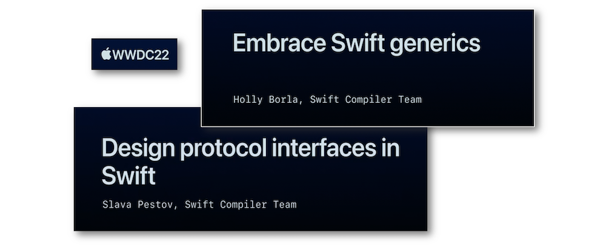
"Generics are a fundamental tool for writing abstract code in Swift. Learn how you can identify opportunities for abstraction as your code evolves, evaluate strategies for writing one piece of code with many behaviors, and discover language features in Swift 5.7 that can help you make generic code easier to write and understand."
"Learn how you can use Swift 5.7 to design advanced abstractions using protocols. We'll show you how to use existential types, explore how you can separate implementation from interface with opaque result types, and share the same-type requirements that can help you identify and guarantee relationships between concrete types."
The crucial terms used in this speech are indicated hereunder:
Most of the illustrations are parts of the Apple presentations and may be available at the Resources section inside the Overview sheet of each video.
Hereafter, the underlined elements lead directly to the playback of the WWDC video at the appropriate moment.
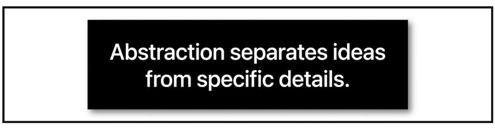
When code snippets turn out to be iterative, it might be interesting to implement some abstract code by using polymorphism in the first place.
Polymorphism #
Using subtypes brings about the creation of a parent class from which each global functions will be inherited.
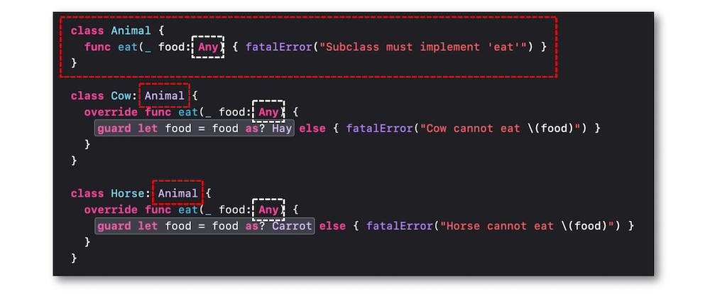
To avoid potential problems with the subtype solution, a more generic code is set up by way of generic types through type parameters that specify and name a placeholder type with a pair of matching angle brackets.
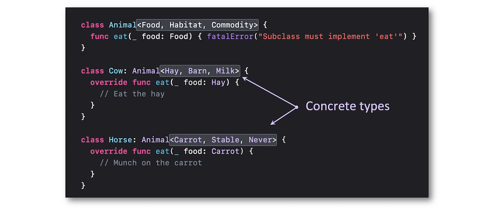
In case of numerous added types, this code design could quickly become cumbersome.
Basics for generic code #
The best way to get rid of some problematic situations using polymorphism is based on building an interface that won't take the implementation details into account.
Protocol #
In this perspective, Swift leans on a protocol to describe the functionality of conforming types in conjuction with associated types acting as placeholders for concrete types inside this protocol.
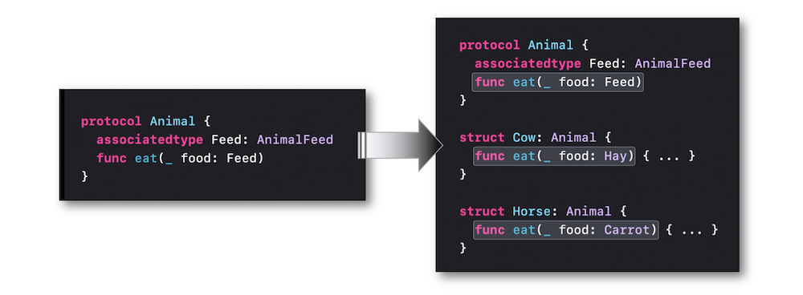
The best way to set up a refined conception is based on the powerful expression of named type parameters and trailing where clauses...
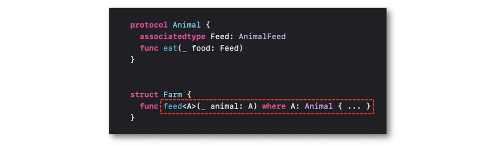
... whose code writing has been enhanced in Swift 5.7.
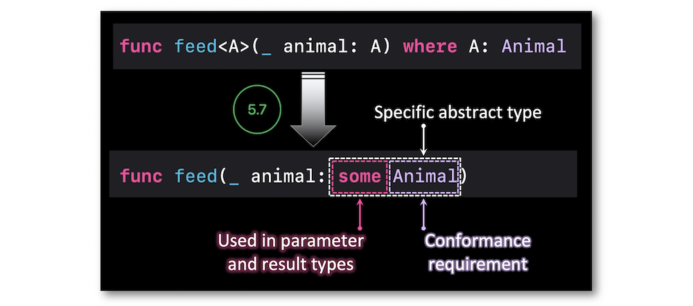
However, this improvement may be avoided in some specific situations.
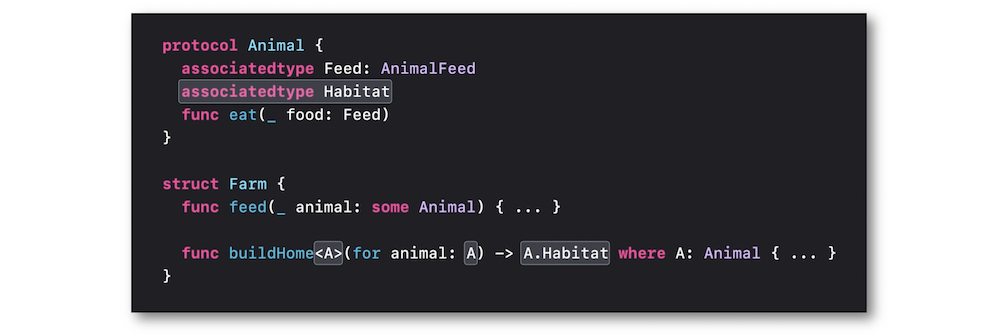
Some #
The abstract type prefixed by the some keyword was introduced in Swift 5.1 as an opaque type...
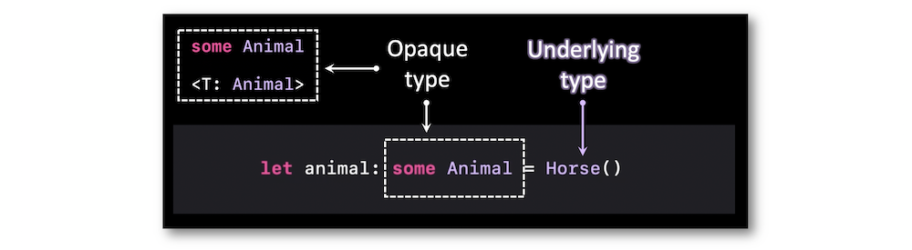
... that isn't analyzed the same way depending on its role that will give rise to different assessings of its underlying type.
As the underlying type must be fixed, it's impossible to modify the initial value of an opaque type when used for a local variable.
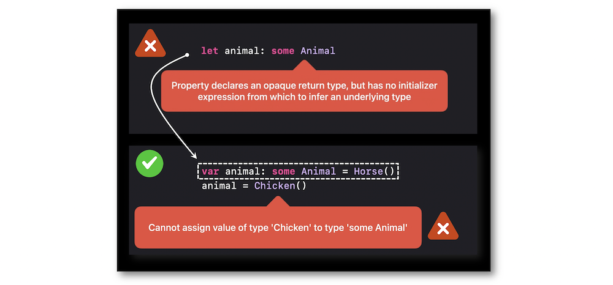
Using some as parameter is new in Swift 5.7 and offers the opportunity to provide various types of elements.
An opaque type also permits to dive into the underlying type's properties in a safe way.
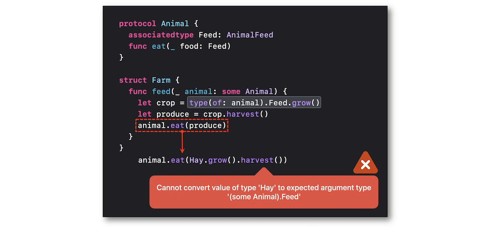
Using the some keyword implies having the same type for all the elements inside an array (the underlying type is fixed and can't vary).
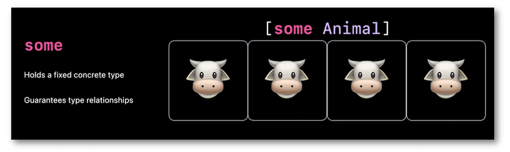
Any #
The static type prefixed by the any keyword introduced in Swift 5.6 is appointed an existential type and is represented by a specific structure in memory.
The idea of having the same representation for different concrete types is called type erasure and these concrete types known only at runtime are said to be erased at compile time⟹ same static type and different dynamic types.
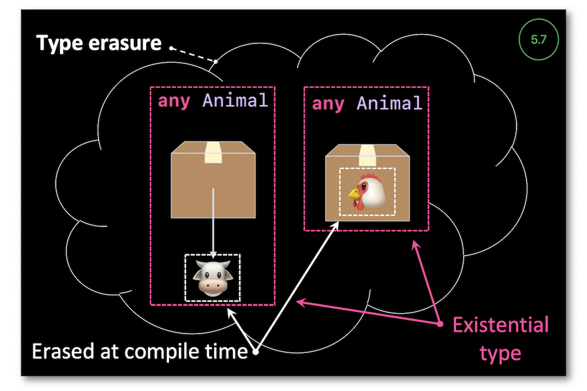
The type 'any ProtocolName' is called the upper bound of the associated type in the protocol referred to.
It's important to notice that the type erasure doesn't work the same way depending on the role the associated types act in the implementation.
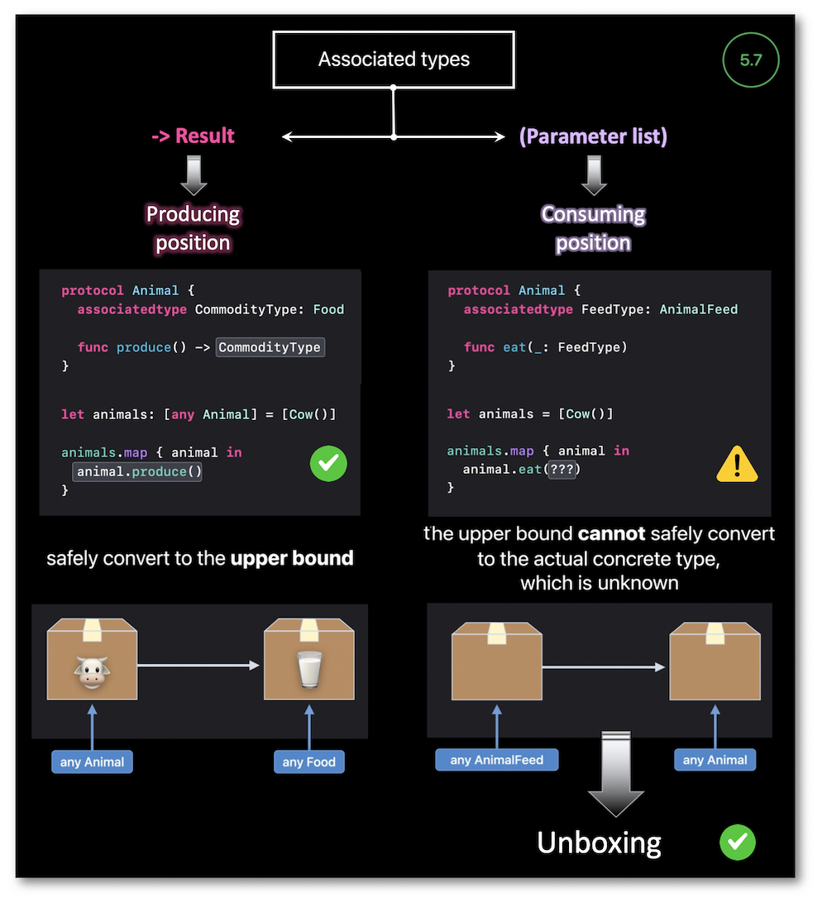
Let the compiler reveal the value stored inside a static type is new in Swift 5.7 and is called unboxing.
This compiler behavior aims at exposing the existential type content by passing this element to a function that takes an opaque type, which is crucial regarding a consuming position of an associate type.
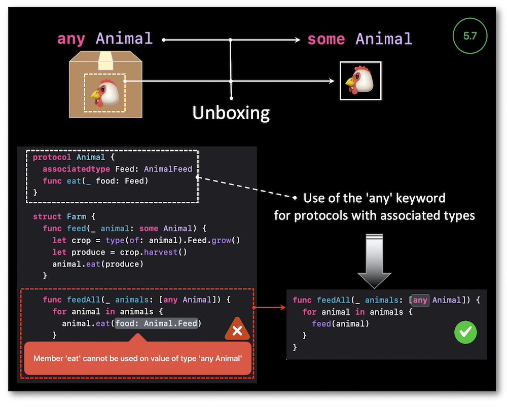
Using the any keyword entitles to store any concrete type dynamically within an array unlike the some keyword.
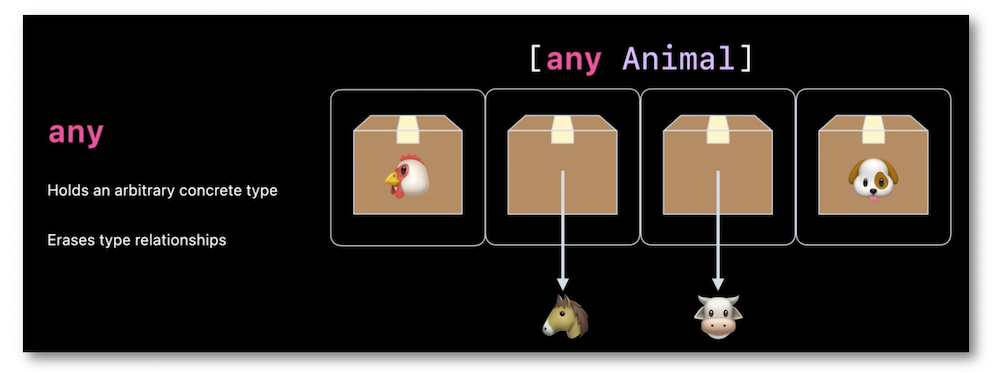
Hide & Identify #
Protocols can now include primary associated types to specify the type for a given associated type as a generic constraint.
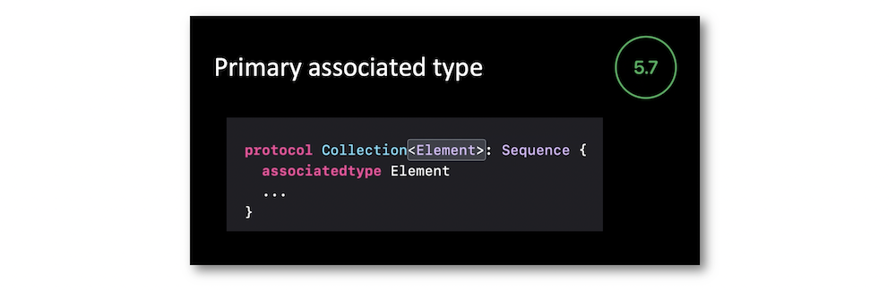
Moreover, Swift 5.7 offers an interesting new way for hiding implementation through the constrained opaque result types that are also available for existential types via the constrained existential result types.
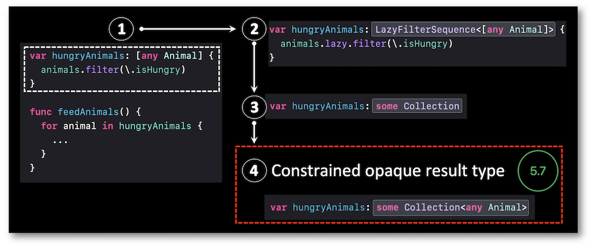
When protocol definitions are too general, they may lead to unfortunate relationships between different groups of concrete types.
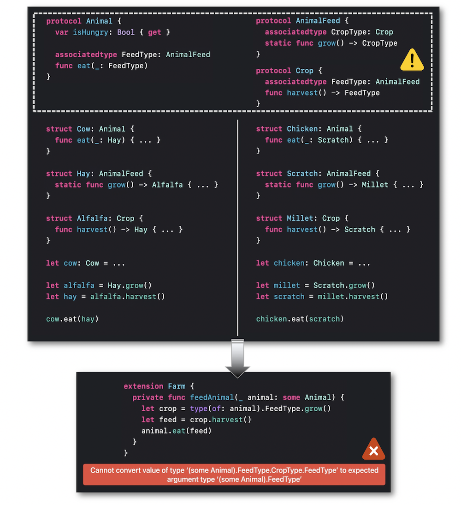
To clear up the impediments outlined by the previous situation, associating the protocol's Self type (which stands for the concrete conforming type) and the same-type requirement (written in a where clause) is definitely the best way to identify the fact that two different associated types designate the same concrete type.
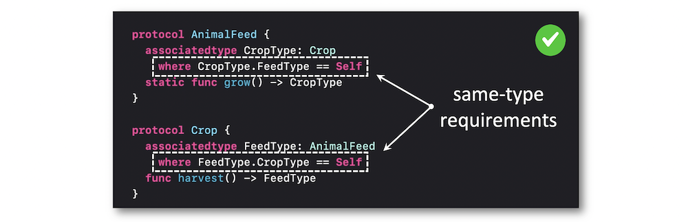
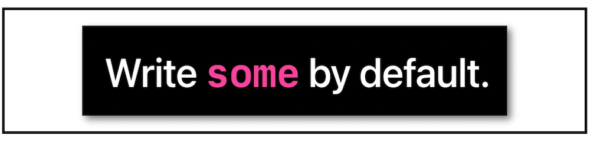